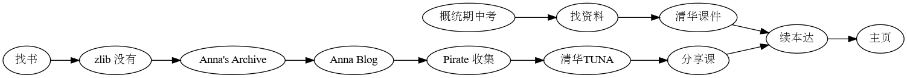

有感而发-
好久没写博客了，因为感到自己写的内容太幼稚，上传到互联网上就像是送一些残次品去参加世界大奖赛。
今天看到一些博客，实在感触太多。那些过去的文字，触击心灵。
到

看到南大（他）校（之）友，又一次感到这些学校真厉害。读到写关于社团运营的内容，揭露了许多我意想不到的事情，他将参与社团称为大学不可或缺的部分，这是最真心地令我感到没有参加而可惜的一次。
然而，可惜的还有他描述的，我想到维纳在自传里写，战争之后从前的氛围再也不见了，疫情改变了什么，我终于感受到了时局变化的力量，它在这体现 同时也让我进一步思考关于过去与现在社会的变化，到底变了吗？就像他描述的表白墙，刚开始是机锋十足的对话，慢慢变成推销 我一直认为是过去电子产品不广泛，使得旧有的（给予线下真实真诚的）互动交流还依然存在，人们因为物理感受上丰富的面对面交流而， 如今电子化之后接触的感觉与从前完全不同了。
看了一眼过去的内容，浏览一下网站和没有上传的新页面，忽然觉得也不错，那篇多项式的笔记，看起来也很舒服。我留下的痕迹没有那么不堪。
忽然感到挺快乐的；）
时机已经成熟不要再犹豫了，一切都是最好的安排！
想来，最近我有动力的可以做点贡献的是在 EMACS 中 优化 DOT 的使用，方便加节点，连线，立刻编辑，这么好的语言（至少形式上）不能埋没了。 （假如有一天我懂了 DOT ，我一定要开发一个更好地语言，起名 DOTS —— Description Of Transendent Structure ）
好像我把两个混为一谈了，但我看它们写的内容真的好有意思 我一定会回来的！！！